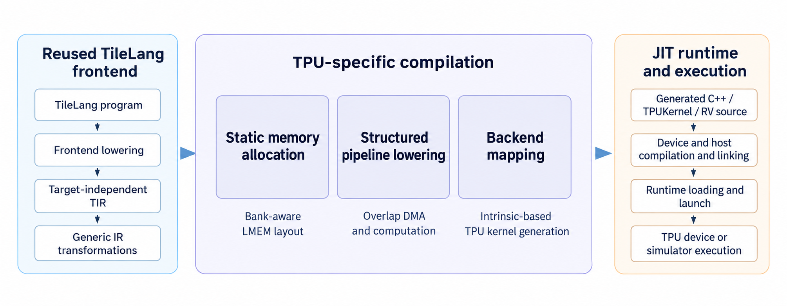
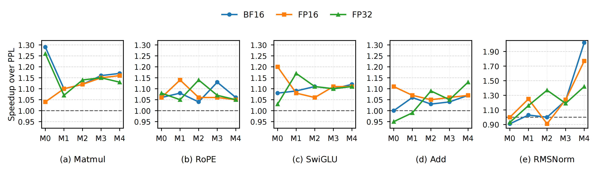
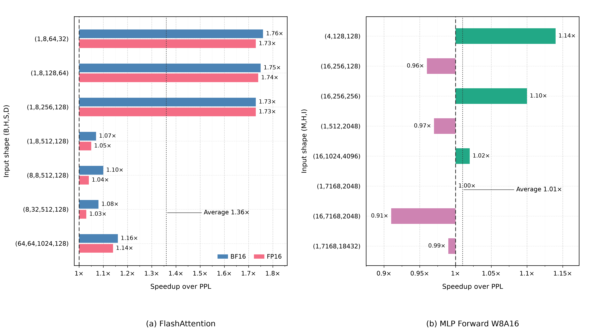

Introduction
TileLang-TPU lets developers write high-performance kernels for SOPHGO TPUs in Python. It retains TileLang’s tile abstraction, frontend and hardware-independent transformations and optimizations. A tile is a block of data used to describe computation. The compiler handles on-chip memory allocation, data transfers, compute pipeline scheduling and TPU instruction selection. Just-in-time (JIT) compilation connects the Python definitions to execution on the device. This lets developers write concise kernels without managing these low-level hardware details. In the tested workloads, performance matches or exceeds the vendor’s optimized implementations.
The project supports common deep learning operators on the SOPHGO BM1690 and has been evaluated on that chip. It can run kernels on real hardware and use the software simulator for debugging. Planned work includes testing complete large language model inference workloads and extending compilation to multiple cores.
Architecture
Writing a fast TPU kernel requires more than describing the computation. It also requires deciding where data lives in on-chip memory, ordering transfers and computation, and calling the hardware instruction interfaces. TileLang-TPU reuses TileLang’s Python frontend, Tensor Intermediate Representation (TIR) and general compilation passes. A TPU-specific backend handles the hardware-dependent work.
Developers describe computation and data transfers with TileLang-TPU’s frontend operations. The current backend optimizes within a single core; it does not yet distribute work across cores. It also requires static input shapes, which are known at compile time. Dynamic-shape compilation is not yet supported.

Core features
On-chip memory management
An automatic address allocation algorithm follows the TPU’s on-chip memory architecture. The compiler analyzes tensor lifetimes from shapes, data types and read/write relationships. Tensors with non-overlapping lifetimes can share storage. Tensors read at the same time are placed in different memory banks where possible to reduce access conflicts.
Transfer and compute pipelining
The compiler analyzes data dependencies between execution units and uses the developer’s requested pipeline depth to organize loads, computation and stores in tiled loops. It schedules the GDMA data-transfer unit alongside the TIU compute unit, preparing later tiles while the current tile is processed. This allows fine-grained overlap between data transfers and computation.
Hardware instruction mapping
Common operations, including data copies and transfers, matrix multiplication, element-wise computation and reductions such as sums and maxima, are translated into TPU-Kernel hardware instruction calls. The compiler supplies shapes, strides, addresses and data types to generate device code.
Compilation and execution from Python
JIT compilation generates the device program and host-side calling code, then compiles, loads and launches the kernel. It supports both execution on a physical TPU over PCIe and debugging with the cmodel software simulator.
Implementation and results
The BM1690 compiler backend, JIT runtime and implementations of common large language model operators are in place. Supported operations include matrix multiplication, RMSNorm, RoPE, SwiGLU, element-wise addition and reductions, including operators used in LLaMA and DeepSeek inference.
Performance was evaluated on one core of the SOPHGO BM1690, comparing TileLang-TPU with the vendor’s optimized PPL implementations in the SOPHGO Torch-TPU operator library. Each comparison uses the same input shapes and data types, with shapes fixed at compile time. Measurements cover device-side kernel execution time. PPL (Primitive Programming Language) is SOPHGO’s kernel programming language.
Average speedups over PPL are 1.14× for matrix multiplication, 1.23× for RMSNorm, 1.08× for RoPE, 1.11× for SwiGLU and 1.05× for element-wise addition. All five operator categories are faster on average. The effective lines of code in the kernel implementations are reduced by 44.85% relative to PPL. These results show that the tile abstraction can express kernels more concisely while matching or exceeding the vendor library’s performance in the tested workloads.
RMSNorm normalizes the scale of activations, RoPE encodes token positions and SwiGLU is a gated activation used in feed-forward layers. BF16 and FP16 are 16-bit floating-point formats; FP32 uses 32 bits.

TileLang-TPU also supports fused kernels, which combine several computation steps. For FlashAttention, an attention kernel used in large language models, the implementation achieves an average speedup of 1.36× over the vendor’s PPL implementation under the same algorithmic formulation.
For the MLP W8A16 Dequantized Forward workload, the average speedup over PPL is 1.01× across the tested configurations, essentially matching the baseline. MLP is the model’s feed-forward network. W8A16 means 8-bit weights and 16-bit activations; dequantization converts stored low-precision weights into values used for computation.

Significance
TileLang-TPU provides a way to bring specialized AI chips into an open kernel programming ecosystem. For SOPHGO TPUs, it reuses TileLang’s programming interface and general compiler components, while placing chip-specific memory management, data transfers and hardware calls in a dedicated backend. This can reduce the work needed to build a kernel programming stack for a new chip. Hardware vendors can draw on community programming tools, kernel implementations and compiler techniques. Kernel developers can use familiar tile-level code while retaining room to tune algorithms and performance for the chip.
The open-source implementation provides a shared basis for collaboration among AI chip vendors, compiler researchers and large language model developers in China and elsewhere. The project welcomes work on new hardware targets, complex kernel optimization and acceleration across models and devices. Sharing these implementations and optimization techniques makes them available for others to reuse and extend, and gives developers more hardware and software choices.